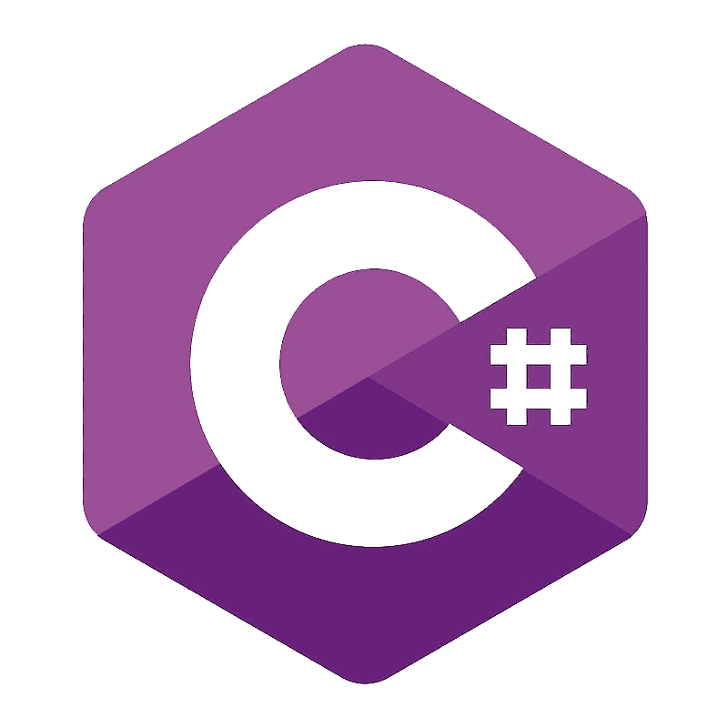
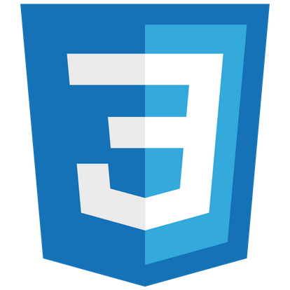

Soft Skills
Independent Patient Flexible Eager to learn
Technical Skills
General IT knowhow
Software design patterns, database design, agile methodologies(scrum), object-oriented programming
Tools, techs and languages

C#
.NET
Java
Javascript
HTML

CSS
SQL
Git